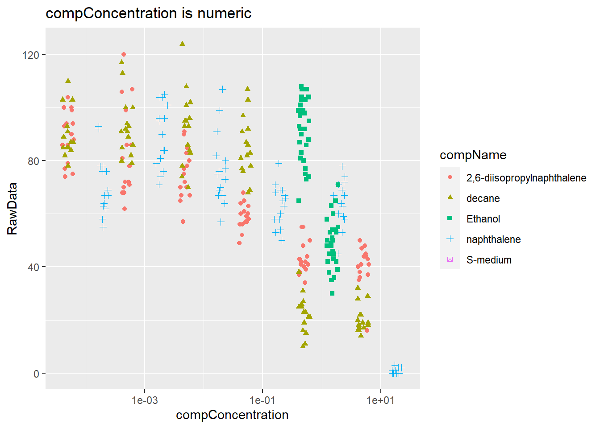

Chapter 2 Reproducible research
C. elegans plate experiment
The data for this exercise was kindly supplied by J. Louter (INT/ILC) and was derived from an experiment in which adult C.elegans nematodes were exposed to varying concentrations of different compounds. The variables RawData (the outcome - number of offspring counted as an integer value, after incubation time), compName (the generic name of the compound/chemical), the compConcentration (the concentration of the compound), and the expType are the most important variables in this dataset.
A typical analysis with this data would be to run a dose-response analysis using a log-logistic model with estimates for the maximal, the minimal, the IC50 concentration and the slope at IC50. We will not go into the details but a good package to run such computations and create graphs in R is the {drc} package. See: and:. In the exercise below we will create some visualizations using {ggplot2}.
Before we start, we will inspect the dataset. We do this by opening it in Excel. When you look at this dataset, a few things stand out. Among other things, there are many tabs with very large tables without an explanation. This makes it difficult for outsiders to use this data.
Then we will load the data into rstudio.
library(tidyverse)## -- Attaching packages --------------------------------------- tidyverse 1.3.1 --## v ggplot2 3.3.4 v purrr 0.3.4
## v tibble 3.1.2 v dplyr 1.0.7
## v tidyr 1.1.3 v stringr 1.4.0
## v readr 1.4.0 v forcats 0.5.1## -- Conflicts ------------------------------------------ tidyverse_conflicts() --
## x dplyr::filter() masks stats::filter()
## x dplyr::lag() masks stats::lag()library(readxl)
ce_liq_flow_062 <- read_excel("data/CE.LIQ.FLOW.062_Tidydata.xlsx", sheet = 1)Now we can look at the data types. we will do this for the columns rawData, compName and compConcentration.
typeof(ce_liq_flow_062$RawData)## [1] "double"typeof(ce_liq_flow_062$compName)## [1] "character"typeof(ce_liq_flow_062$compConcentration)## [1] "character"You would expect comConcentration to be numeric but as you can see this is character.
Now we are going to make a scatter plot of the data. We put compconcentration on the x-axis and DataRaw on the y-axis. We give a different color to the levels of compname and a different shape to the levels of expType. In addition, we ensure that the numbers below the x-axis are rotated 45 degrees so that we can read those.
ggplot(data = ce_liq_flow_062, aes(x = compConcentration, y = RawData)) +
geom_point(aes(colour = compName, shape = expType)) +
scale_x_discrete(guide = guide_axis(angle = 45)) +
labs(title = "compConcentration is double")## Warning: Removed 5 rows containing missing values (geom_point).
If we now look at this plot, you can see that the scale of the x-axis is not linearly distributed. This is probably due to the data type of comcondition. So we’re going to change it to numeric. Then we will plot the data again. We now use a log10 transformation to improve the distribution of the x-axis. We also use jitter to avoid overlapping data points.
ce_liq_flow_062$compConcentration <- as.numeric(as.character(ce_liq_flow_062$compConcentration))## Warning: NAs introduced by coerciontypeof(ce_liq_flow_062$compConcentration)## [1] "double"log10_scatter <-ggplot(data = ce_liq_flow_062, aes(x = compConcentration, y = RawData)) +
geom_point(position=position_jitter(width=.1,height=0),aes(colour = compName, shape = compName)) +
scale_x_discrete(guide = guide_axis(angle = 45))+
labs(title = "compConcentration is numeric")
log10_scatter + scale_x_log10()## Scale for 'x' is already present. Adding another scale for 'x', which will
## replace the existing scale.## Warning: Transformation introduced infinite values in continuous x-axis## Warning: Removed 36 rows containing missing values (geom_point).
The positive control for this experiments is naphthale. The negative control for this experiment is S-medium.
After reviewing the data, we could proceed with the analysis of the data to find out whether there is indeed an effect of different concentrations on offspring count and whether the different compounds have a different curve. To find out, first check whether the data is normally distributed. This can be done with the shapio-wilk test. This can be used to determine whether a parametric or non-parametric test can be used to see if there is a statistically significant difference between the different groups.
Finaly we normalize the data for the controlNegative in such a way that the mean value for controlNegative is exactly equal to 1 and all other values are expressed as a fraction thereof. Than we rerun the graph with the normalized data.
normalize <- function(x) {
return ((x - min(x)) / (max(x) - min(x)))
}
library(dplyr)
negative <- dplyr::filter(ce_liq_flow_062, expType == "controlNegative")
wat <- normalize(negative$compConcentration)But because of the compConcentration of the negatve control sample is already 0 nothing will change.